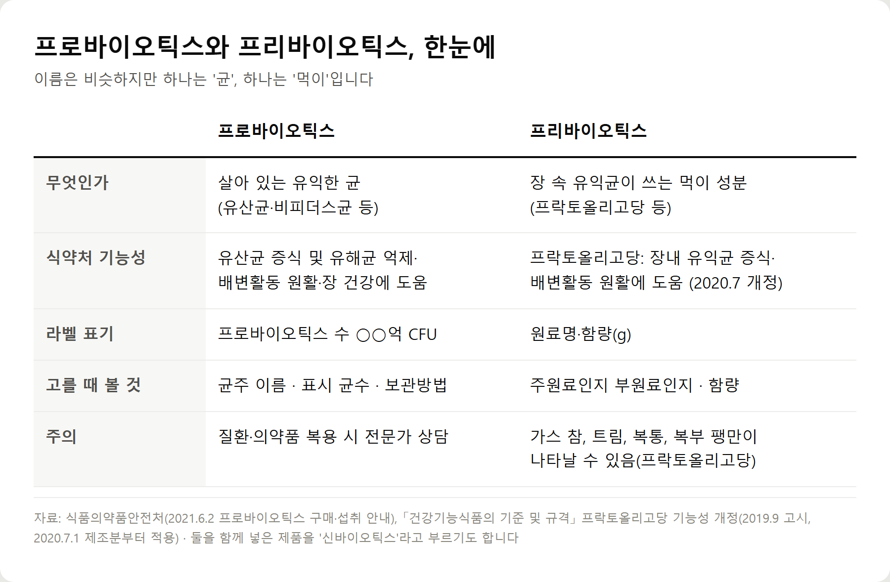
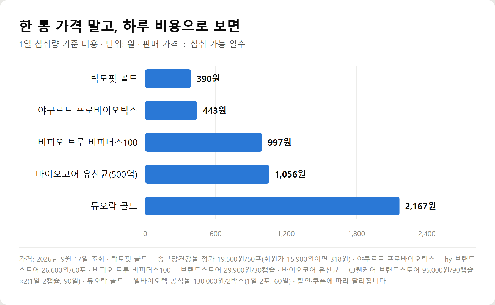
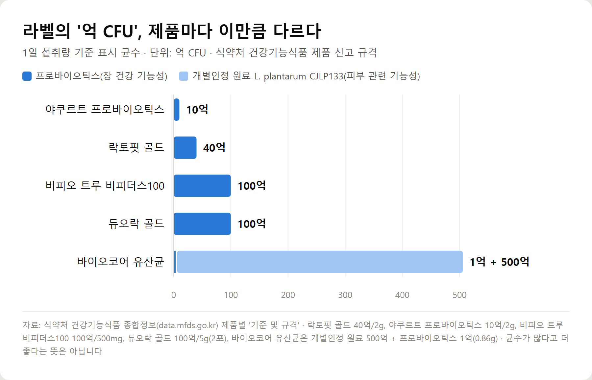
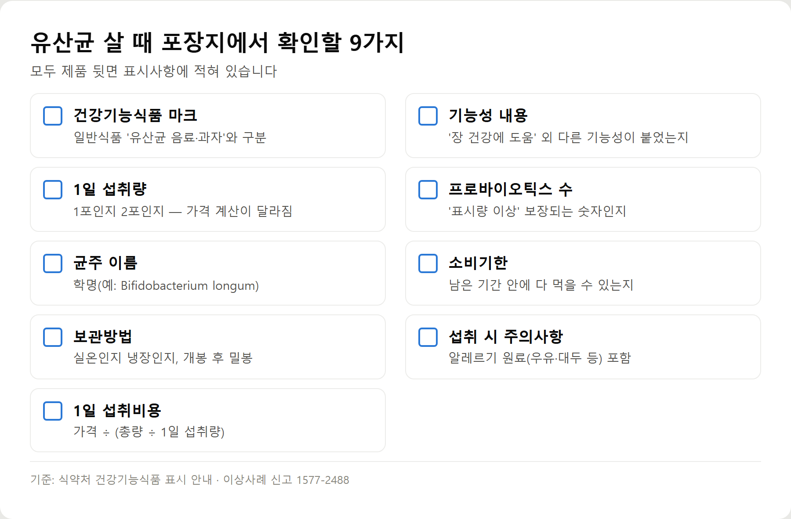

<meta charset="utf-8">
<title>프로바이오틱스 추천 2026 — 식약처 규격으로 비교한 유산균 5종 — 나의 투자 그리고 행복한 여행</title>
<meta name="description" content="유산균 추천 2026. 식약처 신고 규격으로 유산균 5종의 균주·보장균수·보관방법·1일 섭취비용을 비교하고, 프로바이오틱스 고르는 법, 공복·식후 복용시간, 함께 먹는 영양제 주의점을 정리했습니다.">
<meta name="viewport" content="width=device-width, initial-scale=1">
<link rel="canonical" href="https://danielmoon82.github.io/moon/posts/probiotics-guide-2026-09-17.html">
<link rel="preconnect" href="https://fonts.googleapis.com">
<link rel="preconnect" href="https://fonts.gstatic.com" crossorigin>
<link rel="stylesheet" href="https://fonts.googleapis.com/css2?family=Hahmlet:wght@400;600;800&family=IBM+Plex+Mono:wght@400;500&family=IBM+Plex+Sans+KR:wght@300;400;500;600&display=swap">

<style>
  :root{
    --paper:#F2EEE6;--surface:#FAF8F3;--surface-2:#E7E1D5;
    --ink:#191510;--ink-2:#4A4235;--ink-3:#7D7364;
    --line:#D6CEBF;--line-soft:#E4DDD0;--accent:#B06A15;--accent-bright:#C2761A;
    --up:#E5484D;--down:#3B82F6;
    --f-display:"Hahmlet",'Nanum Myeongjo',"Apple SD Gothic Neo",serif;
    --f-body:"IBM Plex Sans KR","Apple SD Gothic Neo","Malgun Gothic",sans-serif;
    --f-mono:"IBM Plex Mono","SFMono-Regular",Consolas,monospace;
    --pad:clamp(20px,5vw,64px);
  }
  @media (prefers-color-scheme:dark){
    :root:not([data-theme="light"]){
      --paper:#0B1120;--surface:#121A2C;--surface-2:#1A2439;
      --ink:#E9EEF7;--ink-2:#A9B5C9;--ink-3:#72809A;
      --line:#26314A;--line-soft:#1D2739;--accent:#E8A33D;--accent-bright:#F0B45C;
    }
  }
  *{box-sizing:border-box;}
  body{margin:0;background:var(--paper);color:var(--ink);font-family:var(--f-body);
    font-weight:300;font-size:1rem;line-height:1.75;-webkit-font-smoothing:antialiased;}
  a{color:inherit;}
  img{max-width:100%;height:auto;}
  .wrap{max-width:760px;margin:0 auto;padding-inline:var(--pad);}
  .nav{position:sticky;top:0;z-index:20;background:color-mix(in srgb,var(--paper) 88%,transparent);
    backdrop-filter:saturate(180%) blur(12px);border-bottom:1px solid var(--line);}
  .nav-in{display:flex;align-items:center;justify-content:space-between;height:58px;}
  .brand{font-family:var(--f-display);font-weight:600;font-size:1rem;letter-spacing:-.02em;text-decoration:none;}
  .back{font-family:var(--f-mono);font-size:.72rem;color:var(--ink-3);text-decoration:none;}
  .article{padding-block:clamp(40px,7vw,72px) clamp(56px,9vw,96px);}
  .eyebrow{font-family:var(--f-mono);font-size:.68rem;letter-spacing:.16em;text-transform:uppercase;
    color:var(--accent);margin:0 0 14px;}
  h1{font-family:var(--f-display);font-weight:800;font-size:clamp(1.6rem,4.4vw,2.3rem);
    line-height:1.3;letter-spacing:-.03em;margin:0 0 16px;}
  .byline{font-family:var(--f-mono);font-size:.72rem;color:var(--ink-3);
    padding-bottom:24px;border-bottom:1px solid var(--line);margin-bottom:32px;}
  h2{font-family:var(--f-display);font-weight:600;font-size:1.25rem;letter-spacing:-.02em;margin:42px 0 14px;}
  h3{font-family:var(--f-display);font-weight:600;font-size:1.05rem;letter-spacing:-.02em;
    margin:30px 0 10px;padding-top:14px;border-top:1px solid var(--line-soft);}
  h3 .code{font-family:var(--f-mono);font-size:.7rem;font-weight:400;color:var(--ink-3);margin-left:6px;}
  p{margin:0 0 18px;color:var(--ink-2);}
  ul.checks{margin:0 0 18px;padding-left:20px;color:var(--ink-2);}
  ul.checks li{margin-bottom:8px;font-size:.94rem;}
  table{width:100%;border-collapse:collapse;font-size:.88rem;margin-bottom:8px;}
  th{font-family:var(--f-mono);font-size:.66rem;letter-spacing:.06em;text-transform:uppercase;
    color:var(--ink-3);text-align:right;padding:8px 6px;border-bottom:1px solid var(--line);}
  th:first-child{text-align:left;}
  td{padding:10px 6px;border-bottom:1px solid var(--line-soft);color:var(--ink-2);}
  td.num{font-family:var(--f-mono);text-align:right;font-variant-numeric:tabular-nums;}
  td.up{color:var(--up);} td.down{color:var(--down);}
  .scroll{overflow-x:auto;}
  figure{margin:22px 0;}
  figure img{display:block;border-radius:3px;background:var(--surface-2);}
  figcaption{margin-top:8px;font-family:var(--f-mono);font-size:.68rem;color:var(--ink-3);text-align:center;}
  .note{margin-top:34px;padding:16px 18px;border-left:3px solid var(--accent);
    background:var(--surface);border-radius:0 3px 3px 0;}
  .note p{margin:0;font-size:.85rem;color:var(--ink-3);}
  .foot{border-top:1px solid var(--line);background:var(--surface);padding-block:30px 38px;}
  .foot p{margin:0;font-size:.8rem;color:var(--ink-3);}
</style>

<nav class="nav">
  <div class="wrap nav-in">
    <a class="brand" href="../index.html">나의 투자 그리고 행복한 여행</a>
    <a class="back" href="../index.html#stocks">← 시황으로</a>
  </div>
</nav>

<main class="wrap article">
  <p class="eyebrow">Market</p>
  <h1>프로바이오틱스 추천 2026 — 식약처 신고 규격으로 비교한 유산균 5종과 고르는 법</h1>
  <p class="byline">건강 · 2026-09-17 기준</p>

  <p><b>이 포스팅은 네이버 쇼핑 커넥트 활동의 일환으로, 판매 발생 시 수수료를 제공받습니다.</b></p>
  <p><b>이 포스팅은 쿠팡 파트너스 활동의 일환으로, 구매 시 수수료를 제공받습니다.</b></p>
  <p>한 줄 요약: 유산균은 균수 숫자보다 '어떤 균이, 1일 섭취량 기준으로 얼마나, 어떤 기능성으로' 표시됐는지를 보고, 가격은 한 통이 아니라 하루 비용으로 비교해야 합니다.</p>
  <p>아래에서 프로바이오틱스와 프리바이오틱스의 차이, 고르는 기준 6가지, 복용시간, 제품 5종의 라벨 비교를 순서대로 정리합니다.</p>
  <h2>유산균이란? 프로바이오틱스와 같은 말일까</h2>
  <p>일상에서 말하는 '유산균'은 요구르트 속 균부터 영양제까지 폭넓게 부르는 말입니다. 비피더스균처럼 엄밀히는 유산균으로 분류되지 않는 균도 흔히 유산균이라고 부릅니다.</p>
  <p>반면 <b>프로바이오틱스</b>는 건강기능식품에서 쓰는 이름입니다. 식약처는 이를 '유산균 증식 및 유해균 억제, 배변활동 원활에 도움을 줄 수 있는 기능성 원료로 제조된 건강기능식품'으로 안내합니다.</p>
  <p>그래서 같은 유산균이라도 두 종류로 나뉩니다.</p>
  <div style="overflow-x:auto"><table border="1" cellpadding="6" style="border-collapse:collapse;width:100%;font-size:14px;line-height:1.5"><thead><tr><th style="background:#f3f5f8">구분</th><th style="background:#f3f5f8">건강기능식품(프로바이오틱스)</th><th style="background:#f3f5f8">일반식품(발효유·유산균 음료 등)</th></tr></thead><tbody><tr><td>표시</td><td>'건강기능식품' 문자 또는 도안</td><td>없음</td></tr><tr><td>기능성 표시</td><td>식약처가 인정한 문구만 가능</td><td>기능성 표시 불가</td></tr><tr><td>균수 기준</td><td>생균 1억 CFU/g 이상, 라벨의 표시량 이상</td><td>건강기능식품 기준 적용 대상 아님</td></tr><tr><td>균주</td><td>식약처가 정한 균주(2021년 안내 기준 19종)</td><td>제품마다 다름</td></tr></tbody></table></div>
  <p>식약처가 안내한 제조 기준은 세 가지입니다. 정해진 19종 균주를 배양하거나 배양·건조해 만들고, 생균이 1g당 1억 CFU 이상이어야 합니다. CFU는 '살아서 증식할 수 있는 균의 수'를 세는 단위입니다.</p>
  <p>기억할 한 가지는, 건강기능식품은 <b>의약품이 아니라는 점</b>입니다. 식약처도 '면역력 증진', '코로나 예방' 같은 표현은 쓸 수 없다고 못 박았습니다.</p>
  <h2>프로바이오틱스와 프리바이오틱스 차이</h2>
  <figure><figcaption>프로바이오틱스와 프리바이오틱스 비교 — 의미·식약처 기능성·라벨 표기·확인할 것·주의사항</figcaption></figure>
  <p>이름이 한 글자 차이라 헷갈리지만 역할이 다릅니다. 프로바이오틱스는 <b>균 자체</b>이고, 프리바이오틱스는 장 속 유익균이 쓰는 <b>먹이 성분</b>입니다.</p>
  <div style="overflow-x:auto"><table border="1" cellpadding="6" style="border-collapse:collapse;width:100%;font-size:14px;line-height:1.5"><thead><tr><th style="background:#f3f5f8">구분</th><th style="background:#f3f5f8">프로바이오틱스</th><th style="background:#f3f5f8">프리바이오틱스</th></tr></thead><tbody><tr><td>의미</td><td>살아 있는 유익한 균</td><td>유익균이 이용하는 성분(프락토올리고당 등)</td></tr><tr><td>역할(식약처 기능성)</td><td>유산균 증식 및 유해균 억제·배변활동 원활·장 건강에 도움</td><td>프락토올리고당: 장내 유익균 증식·배변활동 원활에 도움</td></tr><tr><td>대표적인 형태</td><td>분말 스틱, 캡슐, 정제</td><td>분말, 또는 유산균 제품의 부원료</td></tr><tr><td>제품 선택 시 확인할 것</td><td>균주 이름, 1일 섭취량 기준 균수, 보관방법</td><td>주원료인지 부원료인지, 함량, 주의 문구</td></tr></tbody></table></div>
  <p>프락토올리고당은 기능성 문구가 한 번 바뀐 원료입니다. 식약처 재평가로 2020년 7월 1일 제조분부터 '유해균 억제'와 '칼슘 흡수'가 빠지고, '가스참, 트림, 복통, 복부팽만감이 나타날 수 있다'는 주의 문구가 붙었습니다.</p>
  <p>유산균 제품 원료 목록에 올리고당이 보이는 경우가 많은데, 대부분 부원료입니다. 이번 비교 제품 중에도 락토핏 골드와 듀오락 골드에 프락토올리고당·갈락토올리고당이 들어 있습니다.</p>
  <h2>유산균 고르는 법 6가지</h2>
  <p>광고 문구는 제품마다 다르지만 포장지 뒷면의 표시사항은 같은 틀로 적혀 있습니다. 아래 여섯 가지만 순서대로 보면 됩니다.</p>
  <p><b>① 균주 — '몇 억 마리'보다 '어떤 균'인지</b></p>
  <p>균주 이름은 Bifidobacterium longum처럼 학명으로 적힙니다. 균마다 특성이 달라서 숫자만 비교하면 서로 다른 것을 같은 잣대로 재는 셈이 됩니다.</p>
  <p>여러 균을 넣었다는 표시도 그대로 믿기 어렵습니다. 한국소비자원이 2020년 15개 제품을 시험했을 때, 여러 균종을 넣었다고 표시한 11개 제품이 실제로는 1~2종에 편중돼 있었습니다.</p>
  <p><b>② 보장균수 — 라벨 숫자는 '최소치'다</b></p>
  <p>식약처 제품 신고 규격을 보면 균수는 '표시량 이상'으로 적혀 있습니다. 라벨에 40억 CFU라고 썼다면 그 이상이 들어 있어야 한다는 뜻이고, 이 숫자를 흔히 보장균수라고 부릅니다.</p>
  <p>반대로 <b>투입균수</b>는 만들 때 넣은 양입니다. 균은 제조·유통 중에 줄어들기 때문에 투입균수는 보장균수보다 크게 보입니다. 소비자원 시험에서도 일부 제품이 투입균수와 생균수를 함께 적어 혼동을 준다는 지적을 받았습니다.</p>
  <p>균수를 볼 때는 <b>1일 섭취량 기준인지</b>도 확인해야 합니다. 듀오락 골드는 2포(5g)에 100억 CFU라서 1포만 먹으면 라벨 숫자의 절반입니다.</p>
  <p><b>③ 보관방법 — 냉장이냐 실온이냐는 라벨이 정한다</b></p>
  <p>냉장 제품이 더 좋고 실온 제품이 덜하다는 식약처 기준은 없습니다. 제품마다 정해진 보관 조건에서 표시한 균수를 지키도록 설계돼 있을 뿐입니다.</p>
  <p>그래서 중요한 건 라벨의 조건을 지키는 것입니다. 이번 5개 제품은 모두 실온 또는 서늘한 곳 보관이었고, 바이오코어는 '개봉 후 흡습되지 않게 밀봉', 락토핏 골드는 '개봉한 제품은 바로 섭취'라고 적혀 있습니다. 습기와 열이 공통의 적입니다.</p>
  <p><b>④ 섭취방법 — 1포인지 2포인지, 물이 필요한지</b></p>
  <p>섭취방법은 제품마다 다릅니다. 락토핏 골드는 1일 1포를 물 없이, 듀오락 골드는 1일 2포를 직접 또는 물과 함께, 바이오코어는 1일 2캡슐입니다. 이 차이가 가격 계산을 바꿉니다.</p>
  <p><b>⑤ 부원료 — 올리고당·아연·유당 같은 '같이 든 것'</b></p>
  <p>부원료에는 프리바이오틱스(프락토올리고당 등), 아연 같은 영양성분, 맛을 내는 유당·향료가 들어갑니다. 락토핏 골드와 야쿠르트 프로바이오틱스에는 아연이 1일 2.55mg씩 들어 있습니다.</p>
  <p>유당이나 우유·대두 성분이 맞지 않는 분이라면 원재료 목록과 알레르기 표시를 먼저 보세요. 종합비타민을 함께 드신다면 아연처럼 겹치는 성분도 확인해야 합니다.</p>
  <p><b>⑥ 가격 — 한 통 가격이 아니라 1일 섭취비용</b></p>
  <p>계산식은 간단합니다. <b>판매 가격 ÷ (총 개수 ÷ 1일 섭취량)</b> 입니다.</p>
  <ul class="checks">
    <li>락토핏 골드: 19,500원 ÷ 50일 = 1일 390원</li>
    <li>듀오락 골드: 130,000원 ÷ 60일(120포 ÷ 1일 2포) = 1일 약 2,167원</li>
    <li>바이오코어 유산균: 95,000원 ÷ 90일(180캡슐 ÷ 1일 2캡슐) = 1일 약 1,056원</li>
  </ul>
  <p>소비자원 시험에서도 1일 섭취비용이 217원부터 1,533원까지 최대 7배 차이가 났습니다. 한 통 가격만 보면 이 차이가 보이지 않습니다.</p>
  <h2>유산균 복용시간 — 언제 먹어야 할까</h2>
  <p>유산균 먹는 시간은 가장 많이 검색되는 질문이지만, 모든 사람에게 맞는 정답 시간을 정한 공식 기준은 확인되지 않았습니다. 기준은 <b>제품 라벨의 섭취방법</b>입니다.</p>
  <div style="overflow-x:auto"><table border="1" cellpadding="6" style="border-collapse:collapse;width:100%;font-size:14px;line-height:1.5"><thead><tr><th style="background:#f3f5f8">제품</th><th style="background:#f3f5f8">라벨의 섭취방법(식약처 신고)</th></tr></thead><tbody><tr><td>락토핏 골드</td><td>1일 1회, 1회 1포를 식전·식후 어느때나 물 없이</td></tr><tr><td>야쿠르트 프로바이오틱스</td><td>1일 1회, 1회 1포를 충분한 물과 함께</td></tr><tr><td>비피오 트루 비피더스100</td><td>1일 1회, 1회 1캡슐(500mg)을 물, 음료 등과 함께</td></tr><tr><td>바이오코어 유산균</td><td>1일 1회, 1회 2캡슐을 충분한 물과 함께</td></tr><tr><td>듀오락 골드</td><td>1일 1회, 1회 2포(5g)를 직접 또는 물과 함께</td></tr></tbody></table></div>
  <p><b>유산균 아침에 먹어도 되나요?</b> 됩니다. 5개 제품 모두 시간대를 아침·저녁으로 정해 두지 않았습니다. 아침에 챙기는 습관이 있다면 아침이 편합니다.</p>
  <p><b>유산균 저녁에 먹어도 되나요?</b> 됩니다. 아침을 거르거나 바쁜 분이라면 저녁 식사 뒤처럼 매일 반복되는 시점에 붙이는 편이 빠뜨리지 않습니다.</p>
  <p><b>유산균 공복에 먹어야 하나요?</b> 이번에 확인한 라벨 중 '공복'을 지시한 제품은 없었습니다. 공복 섭취를 권하는 제품이라면 라벨에 그렇게 적혀 있으니 그 제품의 안내를 따르면 됩니다.</p>
  <p><b>유산균 식후에 먹어도 되나요?</b> 됩니다. 락토핏 골드는 라벨에 식전·식후 어느 때나라고 적었습니다. 공복에 먹었을 때 속이 불편한 분이라면 식후가 현실적인 선택입니다.</p>
  <p><b>매일 같은 시간에 먹어야 하나요?</b> 같은 시간이어야 한다는 규정은 없습니다. 다만 하루 1회 제품은 시간을 정해 두는 쪽이 거르거나 두 번 먹는 실수를 줄여 줍니다.</p>
  <p>시간보다 먼저 챙길 것은 <b>항생제</b>입니다. 식약처는 프로바이오틱스를 항생제와 같이 먹으면 효과가 줄 수 있다고 안내합니다. 항생제를 처방받았다면 간격을 어떻게 둘지 약사에게 물어보세요.</p>
  <h2>유산균과 함께 먹어도 되는 영양제</h2>
  <p>비타민D·오메가3·마그네슘·비타민C·종합비타민을 유산균과 함께 먹으면 안 된다는 식약처 안내는 이번에 찾지 못했습니다. 반대로 함께 먹어서 효과가 더 커진다는 공식 근거도 확인되지 않았습니다.</p>
  <p>그래서 조합별로 '효과'가 아니라 <b>확인할 것</b>을 정리했습니다.</p>
  <div style="overflow-x:auto"><table border="1" cellpadding="6" style="border-collapse:collapse;width:100%;font-size:14px;line-height:1.5"><thead><tr><th style="background:#f3f5f8">조합</th><th style="background:#f3f5f8">확인할 것</th></tr></thead><tbody><tr><td>유산균 + 비타민D</td><td>유산균 제품에 비타민D가 들어 있는지 원료 목록 확인(일부 제품은 함께 배합)</td></tr><tr><td>유산균 + 오메가3</td><td>식약처는 EPA·DHA 제품도 특정 약물과 함께 먹을 때 주의가 필요한 원료로 안내 — 복용 약이 있으면 상담</td></tr><tr><td>유산균 + 마그네슘</td><td>마그네슘 제품의 1일 섭취량과 주의 문구를 따로 확인</td></tr><tr><td>유산균 + 비타민C</td><td>산미·부원료로 비타민C가 들어간 유산균도 있으니 겹치는지 확인</td></tr><tr><td>유산균 + 종합비타민</td><td>아연처럼 겹치는 영양성분 합산 — 락토핏 골드·야쿠르트 프로바이오틱스는 아연 2.55mg 함유</td></tr></tbody></table></div>
  <p>식약처의 건강기능식품 섭취 안내에서 핵심은 '같은 기능성 원료가 중복되지 않는지 확인해 일일 섭취량을 넘기지 말라'는 것입니다. 장 건강 제품을 두 개 겹쳐 먹는 경우가 대표적입니다.</p>
  <h2>유산균 제품 비교 — 식약처 신고 규격으로 본 5종</h2>
  <p>국내에서 많이 팔리는 제품 중 식약처 건강기능식품 데이터베이스에서 신고 규격을 확인할 수 있는 5개를 골랐습니다. 순위가 아니라 <b>기준이 다른 제품들을 한 표에 놓은 것</b>입니다.</p>
  <div style="overflow-x:auto"><table border="1" cellpadding="6" style="border-collapse:collapse;width:100%;font-size:14px;line-height:1.5"><thead><tr><th style="background:#f3f5f8">제품</th><th style="background:#f3f5f8">주요 균주</th><th style="background:#f3f5f8">표시 균수(1일)</th><th style="background:#f3f5f8">1일 섭취량</th><th style="background:#f3f5f8">보관방법</th><th style="background:#f3f5f8">1일 비용</th><th style="background:#f3f5f8">특징</th></tr></thead><tbody><tr><td>락토핏 골드(종근당건강)</td><td>L. plantarum, L. fermentum, L. acidophilus, B. bifidum, B. lactis, S. thermophilus</td><td>40억 CFU</td><td>1포(2g)</td><td>직사광선 피해 서늘한 곳</td><td>390원</td><td>물 없이 섭취, 아연 2.55mg</td></tr><tr><td>야쿠르트 프로바이오틱스(hy)</td><td>L. acidophilus 등</td><td>10억 CFU</td><td>1포(2g)</td><td>실온, 건조한 곳</td><td>443원</td><td>아연 2.55mg</td></tr><tr><td>비피오 트루 비피더스100(락토메이슨)</td><td>B. bifidum, B. breve, B. longum, B. lactis</td><td>100억 CFU</td><td>1캡슐(500mg)</td><td>직사광선 피해 서늘한 곳</td><td>997원</td><td>비피더스균 4종 캡슐</td></tr><tr><td>바이오코어 유산균(CJ웰케어)</td><td>L. plantarum CJLP133(개별인정), B. lactis</td><td>500억 CFU(개별인정 원료) + 1억 CFU</td><td>2캡슐</td><td>실온, 개봉 후 밀봉</td><td>1,056원</td><td>장용성 캡슐, 피부 관련 개별인정 기능성</td></tr><tr><td>듀오락 골드(쎌바이오텍)</td><td>B. bifidum, B. lactis, B. longum, L. acidophilus, L. rhamnosus, S. thermophilus</td><td>100억 CFU</td><td>2포(5g)</td><td>습기·일광 피해 서늘한 곳(실온)</td><td>2,167원</td><td>올리고당 부원료, 우유·대두 함유</td></tr></tbody></table></div>
  <figure><figcaption>유산균 5종 1일 섭취비용 비교 (단위: 원, 2026년 9월 17일 조회 가격 기준)</figcaption></figure>
  <figure><figcaption>유산균 5종 1일 섭취량 기준 표시 균수 (단위: 억 CFU, 식약처 제품 신고 규격)</figcaption></figure>
  <p>표에서 가장 눈여겨볼 곳은 <b>바이오코어의 500억</b>입니다. 식약처 신고 규격을 보면 500억 CFU는 개별인정 원료인 L. plantarum CJLP133의 균수이고, 이 원료의 인정 기능성은 '면역과민반응에 의한 피부상태 개선에 도움'입니다. 장 건강 기능성의 프로바이오틱스 표시량은 1억 CFU로 따로 적혀 있습니다.</p>
  <p>큰 숫자가 틀렸다는 뜻이 아닙니다. 같은 'CFU'라도 <b>어떤 원료의, 어떤 기능성에 대한 숫자인지</b>를 나눠 봐야 한다는 뜻입니다. 라벨을 끝까지 읽어야 보이는 부분입니다.</p>
  <p>락토핏 골드도 확인할 점이 있습니다. 식약처 데이터베이스에는 '락토핏 골드'(40억 CFU, 아연)와 '생유산균 락토핏 골드'(20억 CFU)가 따로 신고돼 있습니다. 판매처에 따라 이름이 섞여 쓰이니 받은 제품의 표시사항으로 확인하세요.</p>
  <p>가격은 2026년 9월 17일 공식몰·브랜드스토어 기준입니다. 락토핏 골드는 회원가 15,900원이면 1일 318원이 되는 것처럼, 할인과 묶음 구성에 따라 순서가 바뀔 수 있습니다.</p>
  <p><b>가격을 가장 중요하게 보는 분</b> — 1일 비용이 낮은 쪽은 락토핏 골드(390원)와 야쿠르트 프로바이오틱스(443원)였습니다. 둘 다 아연이 들어 있으니 종합비타민과 겹치는지만 확인하세요.</p>
  <p><a href="https://link.coupang.com/a/g6XEvGWqdM" target="_blank" rel="sponsored noopener">쿠팡에서 락토핏 골드 가격 보기</a></p>
  <p><a href="https://brandconnect.naver.com/affiliates/996629404216448?channelProductNo=6429004285" target="_blank" rel="sponsored noopener">네이버에서 보기 — 야쿠르트 프로바이오틱스 60포 (hy 브랜드스토어)</a></p>
  <p><a href="https://link.coupang.com/a/g6XGhDpYjs" target="_blank" rel="sponsored noopener">쿠팡에서 야쿠르트 프로바이오틱스 가격 보기</a></p>
  <p><b>균주 구성을 중요하게 보는 분</b> — 비피더스균 위주로 고르고 싶다면 비피더스균 4종으로 구성된 비피오 트루 비피더스100, 락토바실러스와 비피도박테리움을 섞은 구성을 원하면 듀오락 골드나 락토핏 골드가 해당합니다.</p>
  <p><a href="https://brandconnect.naver.com/affiliates/996629447125376?channelProductNo=11159886589" target="_blank" rel="sponsored noopener">네이버에서 보기 — 비피오 트루 100억 비피더스균 (비피오 공식 스토어)</a></p>
  <p><a href="https://link.coupang.com/a/g6XGE4qmDk" target="_blank" rel="sponsored noopener">쿠팡에서 비피오 트루 비피더스100 가격 보기</a></p>
  <p><b>보관 편의성을 중요하게 보는 분</b> — 5개 모두 냉장이 필요 없었습니다. 개별 포장 스틱(락토핏·야쿠르트·듀오락)은 한 번에 하나씩 뜯어 습기 노출이 적고, 캡슐 통 제품(비피오·바이오코어)은 개봉 후 밀봉에 신경 써야 합니다.</p>
  <p><a href="https://brandconnect.naver.com/affiliates/996629489777536?channelProductNo=10802755584" target="_blank" rel="sponsored noopener">네이버에서 보기 — CJ 바이오코어 500억 90캡슐×2 (CJ웰케어 스토어)</a></p>
  <p><b>간편한 섭취를 원하는 분</b> — 물 없이 먹는 분말은 락토핏 골드, 한 번에 삼키는 캡슐은 비피오(1캡슐)와 바이오코어(2캡슐)입니다. 1일 2포인 듀오락 골드는 챙길 개수가 하나 더 많습니다.</p>
  <h2>유산균 살 때 확인해야 할 라벨 체크리스트</h2>
  <figure><figcaption>유산균 구매 전 포장지 표시사항 체크리스트 9가지</figcaption></figure>
  <ul class="checks">
    <li>건강기능식품 표시 — '건강기능식품' 문자나 도안이 있는가</li>
    <li>기능성 내용 — 장 건강 외에 다른 기능성이 함께 붙었는가</li>
    <li>섭취량 — 1일 몇 포·몇 캡슐인가</li>
    <li>보장균수 — '프로바이오틱스 수 ○○ CFU'가 1일 섭취량 기준인가</li>
    <li>균주 — 학명으로 적힌 균 이름</li>
    <li>소비기한 — 남은 기간 안에 다 먹을 수 있는가</li>
    <li>보관방법 — 실온인가 냉장인가, 개봉 후 조건</li>
    <li>주의사항 — 알레르기 원료, 임신·수유·질환·의약품 관련 문구</li>
    <li>1일 섭취비용 — 가격 ÷ (총량 ÷ 1일 섭취량)</li>
  </ul>
  <h2>유산균에 대한 흔한 오해 7가지</h2>
  <p><b>균수가 많을수록 무조건 좋은가?</b> 아닙니다. 균주와 기능성이 다르면 숫자를 바로 비교할 수 없습니다. 바이오코어의 500억처럼 숫자가 어떤 원료의 것인지부터 봐야 합니다.</p>
  <p><b>비싼 유산균이 더 좋은가?</b> 가격은 균주 라이선스, 제형, 부원료, 유통 구조가 섞인 결과입니다. 이번 5종의 1일 비용은 5.6배 차이가 났지만, 이 차이가 곧 기능성 차이라는 근거는 없습니다.</p>
  <p><b>냉장보관 제품이 무조건 좋은가?</b> 식약처 기준에 그런 구분은 없습니다. 각 제품이 정한 보관 조건을 지키는 것이 중요합니다.</p>
  <p><b>여러 종류의 유산균을 먹으면 더 좋은가?</b> 제품을 겹쳐 먹으면 같은 기능성 원료가 중복됩니다. 식약처는 중복 섭취로 일일 섭취량을 넘기지 않도록 안내합니다. 한 제품 안에 균종이 많다는 표시도 소비자원 시험에서 실제로는 1~2종에 편중된 사례가 나왔습니다.</p>
  <p><b>유산균은 무조건 공복에 먹어야 하는가?</b> 이번에 확인한 5개 제품의 라벨에는 공복 지시가 없었고, 한 제품은 식전·식후 어느 때나라고 적었습니다.</p>
  <p><b>유산균은 누구나 먹어도 되는가?</b> 식약처는 면역억제제를 복용하는 사람에게는 감염 위험이 있을 수 있다고 안내합니다. 제품 라벨에도 '질환이 있거나 의약품 복용 시 전문가와 상담할 것'이 공통으로 적혀 있습니다.</p>
  <p><b>유산균을 먹으면 모든 장 문제가 해결되는가?</b> 건강기능식품의 기능성은 '도움을 줄 수 있음' 수준으로 인정된 것이며 질병을 치료하는 의약품이 아닙니다. 복통이나 배변 변화가 계속되면 제품을 바꾸기보다 진료를 받는 것이 맞습니다.</p>
  <h2>유산균 복용 시 주의사항</h2>
  <p><b>섭취 후 불편한 증상이 나타날 때</b> — 제품 라벨에는 '이상사례 발생 시 섭취를 중단하고 전문가와 상담할 것'이 들어 있습니다. 식약처 이상사례 신고는 1577-2488입니다.</p>
  <p><b>특정 질환이나 면역 관련 상태가 있을 때</b> — 면역억제제를 복용 중이거나 면역 기능이 떨어진 상태라면 먹기 전에 담당 의사와 상의하세요.</p>
  <p><b>영유아</b> — 성인용 제품을 나눠 먹이지 말고, 영유아·어린이용으로 표시된 제품의 섭취량을 따르되 먼저 소아청소년과나 약사에게 확인하세요. 라벨에도 '어린이가 함부로 섭취하지 않도록 지도할 것'이 적혀 있습니다.</p>
  <p><b>임신·수유 중일 때</b> — 락토핏 골드 라벨은 임산부·수유부에게 전문가 상담을 명시합니다. 다른 제품도 같은 기준으로 상담 후 드시는 편이 안전합니다.</p>
  <p><b>약을 복용 중일 때</b> — 항생제는 효과가 줄 수 있고, 면역억제제는 감염 위험이 거론되는 조합입니다. 처방약이 있다면 약사에게 제품 뒷면을 보여 주고 물어보세요.</p>
  <p><b>알레르기</b> — 듀오락 골드와 락토핏 골드는 우유·대두를 함유합니다. 알레르기 체질이면 원재료 표시부터 확인하세요.</p>
  <h2>유산균 추천 FAQ — 자주 묻는 질문 10가지</h2>
  <p>Q1. 유산균은 언제 먹는 것이 좋은가요?</p>
  <p>정해진 최적 시간은 확인되지 않았습니다. 제품 라벨의 섭취방법을 따르고, 매일 빠뜨리지 않을 시점을 정하는 것이 현실적입니다.</p>
  <p>Q2. 유산균은 공복에 먹어야 하나요?</p>
  <p>라벨에 공복이라고 적힌 제품이 아니라면 꼭 공복일 필요는 없습니다. 비교한 5개 제품 중 공복을 지시한 제품은 없었습니다.</p>
  <p>Q3. 유산균은 매일 먹어야 하나요?</p>
  <p>제품 라벨은 모두 '1일 1회' 기준으로 적혀 있습니다. 기능성은 표시된 1일 섭취량을 기준으로 인정된 것입니다.</p>
  <p>Q4. 프로바이오틱스와 유산균은 같은 것인가요?</p>
  <p>일상에서는 비슷하게 쓰지만, 프로바이오틱스는 식약처 기준을 충족한 건강기능식품 원료 이름입니다. 유산균 음료 같은 일반식품은 프로바이오틱스 기능성을 표시할 수 없습니다.</p>
  <p>Q5. 유산균은 냉장보관해야 하나요?</p>
  <p>제품 라벨이 정합니다. 이번 5개 제품은 모두 실온 또는 서늘한 곳 보관이었고, 냉장 표시 제품이라면 냉장에 두어야 합니다.</p>
  <p>Q6. 유산균은 몇 억 마리가 좋은가요?</p>
  <p>숫자에 정답은 없습니다. 건강기능식품 기준은 생균 1억 CFU/g 이상이고, 제품은 라벨 표시량 이상을 지켜야 합니다. 1일 섭취량 기준인지, 어떤 원료의 균수인지를 함께 보세요.</p>
  <p>Q7. 유산균을 다른 영양제와 같이 먹어도 되나요?</p>
  <p>비타민·오메가3 등과 함께 먹으면 안 된다는 공식 안내는 찾지 못했습니다. 다만 아연처럼 겹치는 성분과, 장 건강 제품 중복 여부를 확인하세요.</p>
  <p>Q8. 유산균 제품은 어떻게 골라야 하나요?</p>
  <p>균주, 1일 섭취량 기준 보장균수, 보관방법, 섭취방법, 부원료, 1일 섭취비용 순서로 보면 됩니다.</p>
  <p>Q9. 유산균을 먹을 때 주의할 점은 무엇인가요?</p>
  <p>항생제·면역억제제 복용 중이거나 질환이 있으면 전문가와 상담하고, 불편한 증상이 생기면 중단하세요. 이상사례는 1577-2488로 신고할 수 있습니다.</p>
  <p>Q10. 유산균 제품 가격을 비교하는 방법은 무엇인가요?</p>
  <p>판매 가격을 섭취 가능 일수로 나눠 1일 비용을 구합니다. 1일 2포 제품은 60포가 30일분이라는 점을 놓치기 쉽습니다.</p>
  <h2>정리하면</h2>
  <p>유산균 추천의 핵심은 브랜드가 아니라 라벨입니다. 균주 이름, 1일 섭취량 기준 균수, 그 균수가 어떤 기능성에 대한 것인지, 보관 조건, 그리고 하루 비용까지 다섯 가지를 보면 대부분 정리됩니다.</p>
  <p>복용시간은 라벨이 먼저이고, 그다음은 매일 빠뜨리지 않는 습관입니다. 항생제나 면역억제제를 복용 중이라면 시간보다 상담이 먼저입니다.</p>
  <p><b>함께 보면 좋은 글</b> — <a href="https://danielmoon82.github.io/moon/posts/trip-checklist-2026-09-16.html">해외 장기여행 준비 체크리스트 — 약·영양제 챙기는 순서 포함</a></p>
  <div class="note"><p>이 글은 건강기능식품 선택에 도움이 되는 일반적인 정보를 제공하기 위한 것이며, 개인의 질환이나 복용 중인 약물에 따라 적합성이 달라질 수 있습니다. 제품 규격은 식약처 건강기능식품 종합정보(data.mfds.go.kr)의 신고 내용, 가격은 2026년 9월 17일 각 공식몰·브랜드스토어 조회값이며 판매 시점의 포장 표시사항과 다를 수 있습니다. 식약처 프로바이오틱스 안내(2021.6.2), 건강기능식품 올바른 섭취방법(2020.11.6), 한국소비자원 프로바이오틱스 시험(2020)을 참고했습니다.</p></div>
</main>

<footer class="foot">
  <div class="wrap"><p>나의 투자 그리고 행복한 여행 · 투자 판단의 참고 자료일 뿐, 매수·매도를 권유하지 않습니다.</p></div>
</footer>
